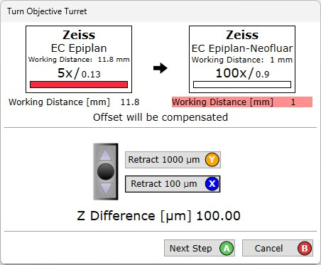
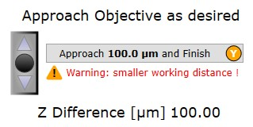

|
更换物镜对话框
|
如果选择另一个物镜，将打开更换物镜对话框。
此对话框是安全更换物镜的辅助工具：

第1步：
可自动将显微镜从样品缩回 100 µm 或 1000 µm（或多次使用）以获得足够的安全转塔旋转空间。当然，也可以使用 UI摇杆控制 或 EasyLink控制器 手动移动Z台。
使用 EasyLink控制器 上的 X/Y/A/B 按钮来按下用户界面上的按钮。
向上移动显微镜后，可以按 下一步。
如果有电动物镜转塔，转塔现在将自动移动；如果不是电动的，请手动旋转物镜转塔。
第2步：
在第二步中，可以手动靠近显微镜并按需对焦，或者可以按 靠近 以自动将显微镜移动到缩回显微镜之前的同一Z位置：

如果更换到工作距离比当前物镜更小的物镜，将收到警告。
请始终确保物镜周围有足够的空间！